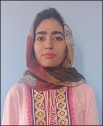

Research Scholars
Sambath RD
Sambath RD, a native of Kerala, received his Bachelor of Fine Arts from the University
of Kerala and Masters of Fine
Arts (Visual Media) from Amrita Vishwa Vidyapeetham University. Sambath is interested in
researching how human behavior
is influenced by environmental features, specifically how elements and principles of
communication design and art
(color, shape, surface finishes) affect human wayfinding behavior. Currently Sambath is
a Ph.D. student in the
discipline of Cognitive Ergonomics. His research interests include, but are not limited
to, the opposing roles of color
and elements of design in human spatial learning and wayfinding. Using psychophysiology
and virtual reality tools and
methods, he investigates the impact of landmark identification and route planning
strategies in human spatial
navigation. He has submitted a research paper on Humanizing Work and Work Environment
2021 - IIT Guwahati 2021, and also
presented a lighting talk at International Interdisciplinary Computational Cognitive
Science Summer School 2021. Outside
of the lab, he thoroughly enjoys being with his family and friends, paintings,
sculpting, gardening, and cooking.
Ankita Verma
Ankita, a Varanasi native, received her Bachelor of Psychology and Masters of
Psychology from the Banaras Hindu
University of Varanasi. She is a PhD student at the Indian Institute of Technology
Roorkee. Ankita’s research interests
include, but are not limited to, the opposing roles of fear in human learning and memory
reconsolidation processes.
Particularly, the effect of music on fear extinction using the paradigm of memory
reconsolidation. Through the use of
psychophysiology methods, she is investigating how the presence of a music during memory
reconsolidation process can
update and modify fear extinction, and further prevent relapse of fearful behaviours.
Outside of the lab, she thoroughly
enjoys music, cooking, reading, being with plants and writing blogs.
Sharmili Mitra
Sharmili has completed her bachelors in Psychology from University of Calcutta and her
masters in Applied Psychology
from Tata Institute of Social Sciences. Her research interests include, but are not
limited to, Human Cognition, Fear
Conditioning, Psychopathology and Social Cognition. Currently, she is a PhD student and
is particularly working in the
area of Fear Generalization and Return of Fear in Humans. Through multi-measure
assessments, she is interested in
examining the efficacy of cognitive and behavioural interventions in Human Fear
Generalization and Return of Fear, and
its implications in anxiety disorders. She is also working on a project on understanding
digital inclusion and
technology acceptance among elderly. In her free time, she enjoys reading, music and
cooking.
Tripureshwari Paul
Tripureshwari has received her bachelors in Applied Psychology from Gargi College,
University of Delhi and masters in
Applied Psychology from University of Delhi, South Campus. In her masters she developed
interest in Cognitive
psychology. Tripureshwari is interested in memory processes and how they can be
influenced
by emotions. These questions
would be achieved by devising a multivariate model using behavioural and physiological
measures. Simultaneously, she is
also interested in fear conditioning and prediction error, believing that her research
will
have some clinical
implications in PTSD and others. She loves animals (feeds street dogs everyday!),
learning
new recipes and strengthen
neural connects (mindful meditation).
Ankit Maurya
I am currently pursuing PhD in the research domain of Time Perception under the
supervision of Dr. Tony Thomas. I have a
Bachelor’s degree (B.Sc. Hons.) in Psychology from Banaras Hindu University, and
Master’s degree (M.Sc.) in Cognitive
Science from Centre of Behavioural and Cognitive Sciences (CBCS), University Of
Allahabad. My Master's thesis looked at
‘Chronostasis in Sequential Saccades’, and was supervised by Dr. Supriya Ray. Also, I
have research experience, working
on a DST project titled, ‘Cognitive Driving Capabilities in Ageing Adults in India’,
under the supervision of Prof. Syed
Musthak Ahmed, at S.R. Engineering College, Warangal. I have research interests in the
domain of Time Perception,
Peri-Personal Space, Vision Science and Multisensory Integration. My non-academic
interests include playing chess,
traveling to new places and engaging in prosocial behaviors.

Kaneez Fatima
Kaneez Fatima received her master's degree in psychology from university of Kashmir,
where
she worked on a master's
dissertation titled "Life satisfaction in relation with Hope and Religiosity". She is a
PhD
student at IIT Roorkee
working in cognitive psychology. Outside of work she enjoys reading fiction and writing.